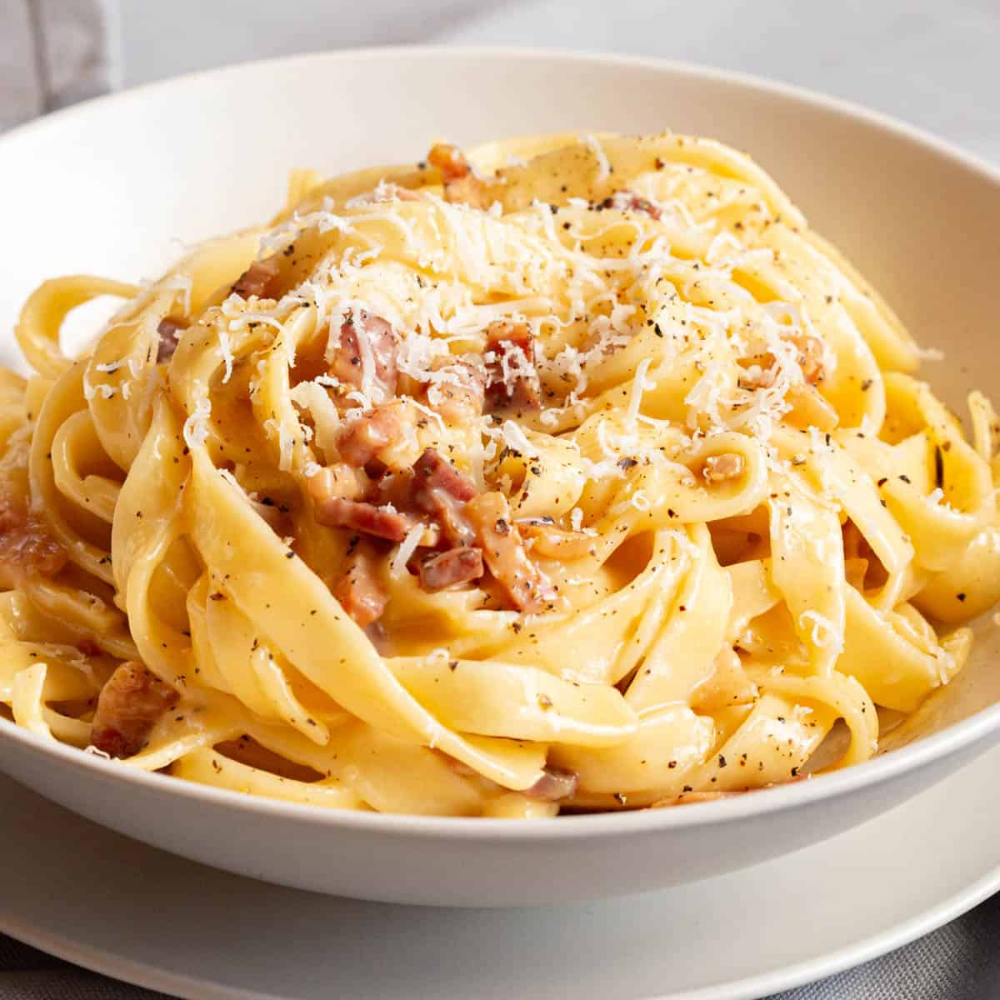

Makes 3 to 4 portions
- 50g of grated parmesan
- 50g of grated Pecorino Romano
- 250g of thick cut bacon, diced into small battons
- 340g of spaghetti (or any alternative pasta)
- 1 egg and 3 egg yolks
- Ground pepper, salt, and olive oil
- Pasta water
- To cook the pasta, bring water to a boil then salt the water. Add the spaghetti and simmer on high for 8 minutes. Tip: When done, pasta should be a bit undercooked or have a bit of crunch in the middle.
- To cook the bacon, preheat a large heavy-bottomed pot over low. Add a bit of olive oil to the pot followed by the bacon. Allow to render and brown for around 8 minutes, stirring occasionally.
- To prepare the sauce, mix the cheeses and eggs together.
- When bacon is rendered, remove from the pot and reduce heat to medium low. Drain bacon grease back into the pot and add black pepper, then stir and scrape.
- Ladle 1 and a half cup of pasta water into the bacon pot and continue to deglaze. After, transfer spaghetti into pot and mix. Make sure to set aside around 2 cups of pasta water to adjust sauce later.
- Add half a cup of pasta water into the egg and cheese mixture into the pot and stir very well.
- Add half a cup of pasta water into the pot and allow it to simmer for around 90 seconds. Check pasta as it should be al dente at this point.
- Remove from heat and add in rendered bacon. Add the egg/cheese mixture and stir until cheese melts. If needed, return pot to low heat, stirring constantly until sauce is velvety and creamy. Make sure to not take too long as sauce will turn gloppy.
- Top with a pinch of aged parm and black pepper. Serve and enjoy!